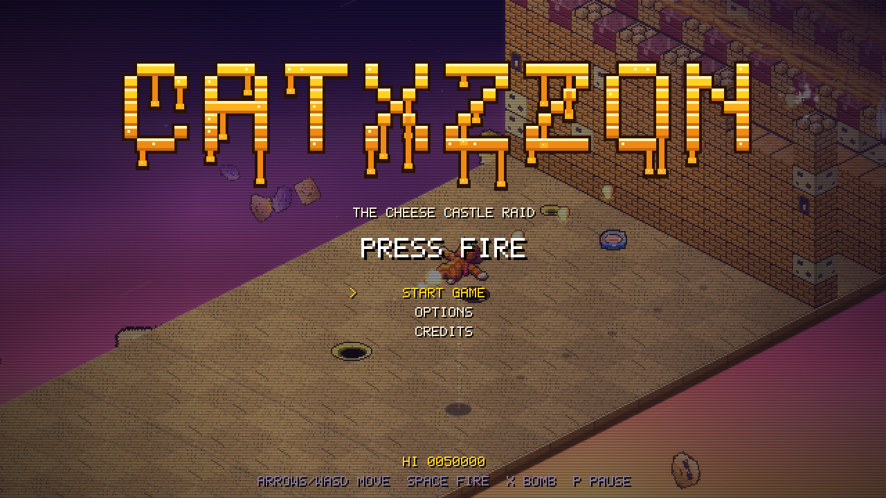
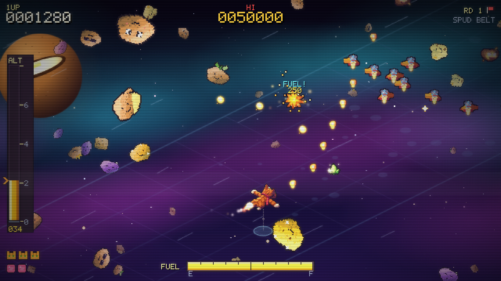
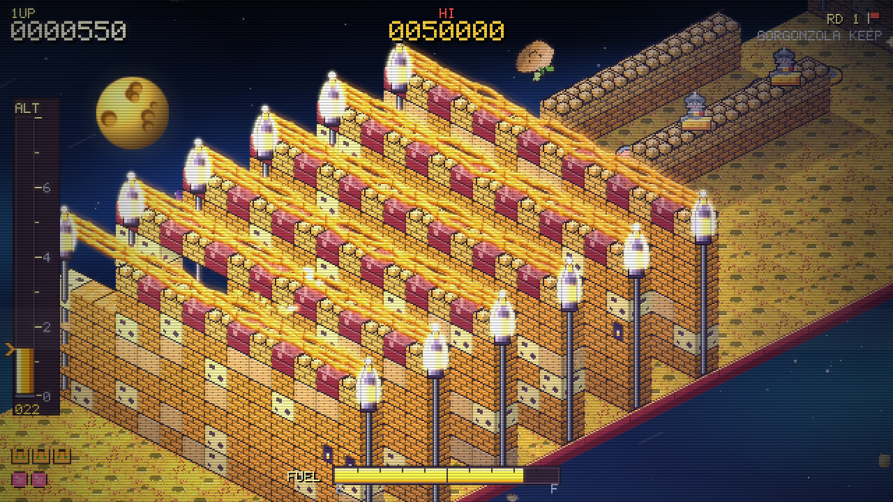
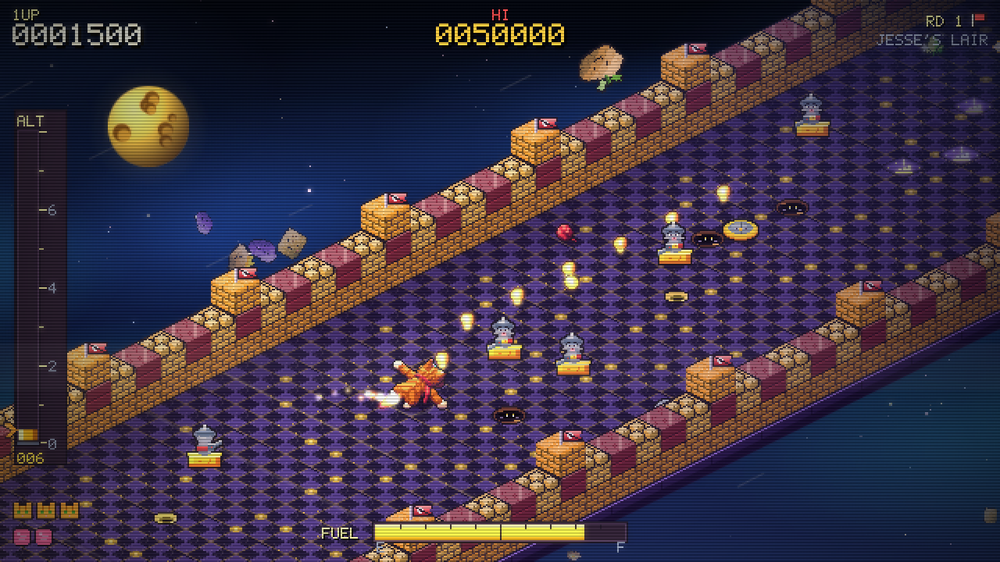
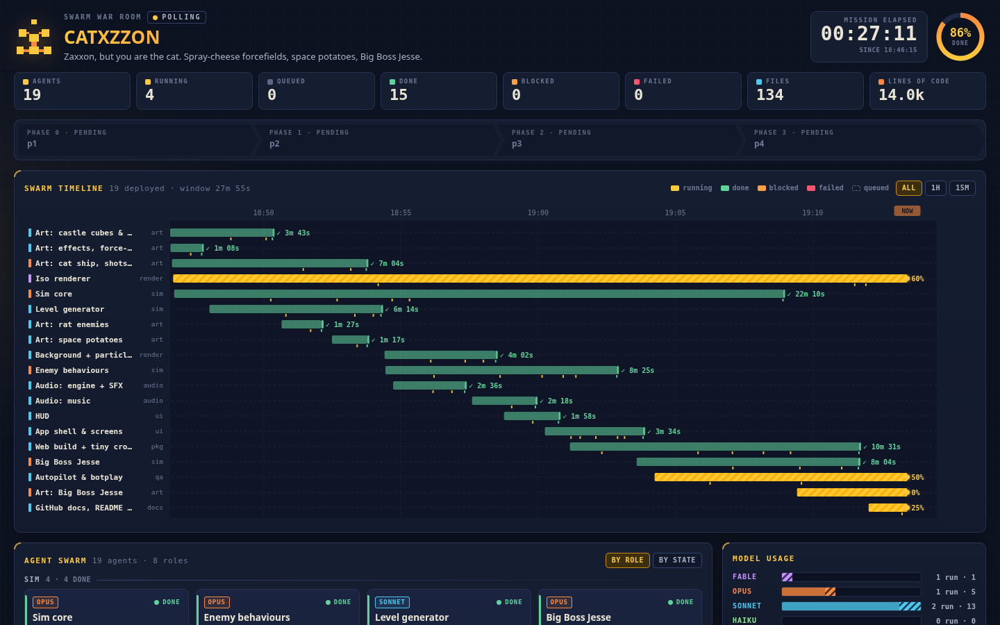

The game
An 80s isometric, diagonally scrolling shooter with altitude, set in the KÄSEKRIEG universe. You are Major Marmalade, a big orange tabby, and the cat is the spaceship. Raid Schloss Gorgonzola, a cheese castle held by grey-uniformed rats, cross the Spud Belt, and face Big Boss Jesse.
- Four stages with generated, ever-harder rounds
- Altitude play: shadow, altimeter, gaps, force fields
- Screen shake, hit-stop, combos, rainbow catnip mode
- Every sprite drawn by code, every sound synthesized
- Zero assets, zero runtime dependencies
- Keyboard, gamepad and touch
Controls: arrows/WASD steer and climb or dive, Space/Z fire, X/Shift yarn bomb, P pause. Full guide.
Screenshots




Downloads
Grab a build from Releases. Binaries are unsigned (macOS: right-click, Open).
| Platform | File | Notes |
|---|---|---|
| Browser | Play online | nothing to install |
| Any | catxzzon.html | one 237 KB file, runs from file:// |
| Linux x64 | catxzzon-<ver>-linux-x64.tar.gz | needs webkit2gtk 4.1, else opens your browser |
| Windows x64 | catxzzon-<ver>-win-x64.zip | needs WebView2 (Windows 10/11) |
| macOS | catxzzon-<ver>-mac-{x64,arm64}.zip | contains CATXZZON.app |
From source, with only Node 22+: git clone https://github.com/bsommers/catxzzon && cd catxzzon && npm start.
Built by a swarm
Nineteen AI agents built CATXZZON in parallel from one binding contract, each owning its own files and reporting progress to a live tracker. Mistakes and the rules they produced are logged for the next swarm.

About Jesse
This game is for Jesse. Jesse is the Big Boss at the end of the castle: the one who laughs at your mistakes, throws cheese walls and homing missiles, and taunts you between lives. Beat him, and the cheese is yours.